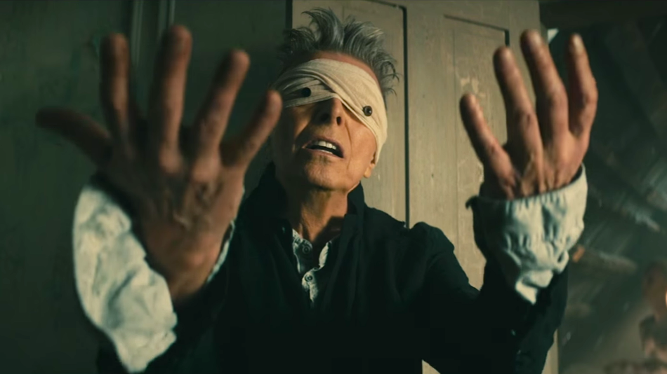

David Bowie
The man of 1,000 faces

Bowie in his penultimate video BlackStar
Here is a timeline of Bowie's career:
- 1962-67 : Early career to debut album
- 1968-71 : Space Oddity to Hunky Dory
- 1972-73 : Ziggy Stardust
- 1974-76 : Soul, funk, and the Thin White Duke
- 1976-79 : Berlin era
- 1980-88 : New Romantic and pop era
- 1989-91 : Tin Machine
- 1992-98 : Electronic period
- 1999-2012 : Neoclassicist Bowie
- 2013-16 : Final years
"Oh I'll be free
Just like that bluebird
Oh I'll be free
Ain't that just like me"
Discover more about the man at his wikipage